Projeler
Hukuk öğrencilerini ve genç hukukçuları farklı alanlarda bir araya getiren projeler geliştiriyoruz. Festivallerden farazi dava yarışmalarına, mesleki buluşmalardan Lawment Insights dergimize uzanan çalışmalarımızla yıl boyunca bilgi ve deneyim paylaşımını destekliyoruz.
01 / Festival
Lawment Fest
Türkiye'nin ilk ve tek hukuk festivali.
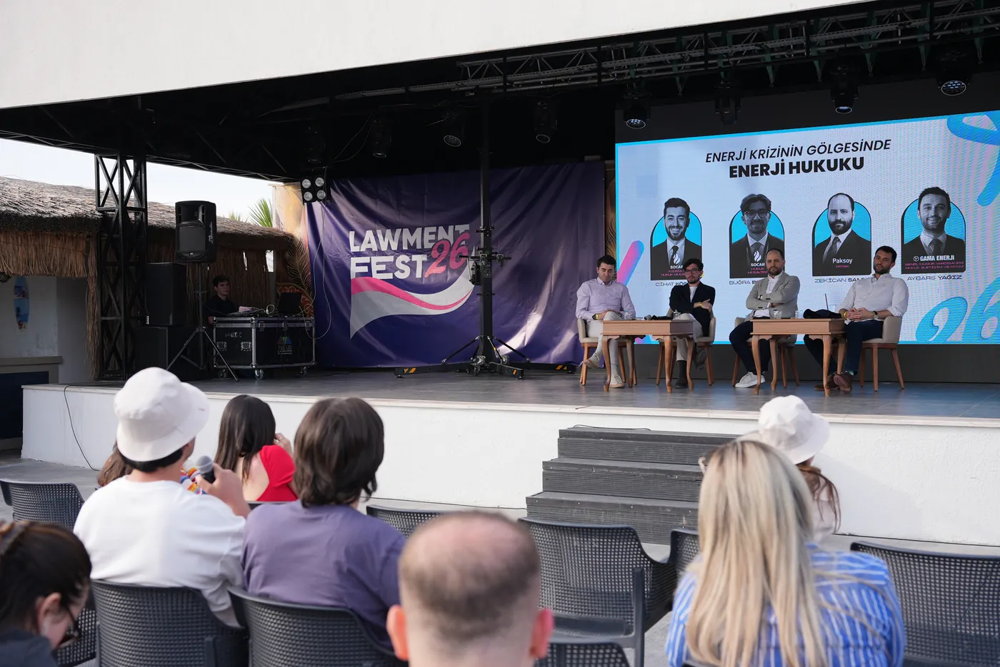
Lawment Fest, hukuk öğrencilerini ve genç hukukçuları üç gün iki gece boyunca hukuk dünyasının farklı alanlarından isimlerle bir araya getirir. Gündüzleri paneller, soru-cevap oturumlarıyla akademik ve mesleki paylaşımlara alan açarken akşamları sosyal etkinliklerle katılımcıların tanışmasını ve kaynaşmasını sağlar. Katılımcılara yeni perspektifler edinme ve mesleki bağlantılar kurma fırsatı sunar.
Etkinlik kapsamında
- Hukuk dünyasından konuşmacılarla paneller ve soru-cevap oturumları
- Teorik bilgiyi uygulamayla buluşturan atölyeler
- Kurum temsilcileri ve meslektaşlarla tanışma ve networking fırsatları
- Katılımcıların bir araya geldiği sosyal etkinlikler ve festival programı
Lawment Fest'25'in panelleri: Tahkim (EDAC), Enerji Hukuku (SOCAR), Ceza Hukuku, Deniz Hukuku (Mare Legal & Consultancy, Maersk, MSC, Arkas), Kurum İçi Avukatlık ve İş Geliştirme (GE Healthcare, Kale Grubu), Risk Değerlendirme, Meriç'in Ötesindeki Rekabet (ACTECON), Birleşme ve Devralma (Kinstellar) ve Dava Avukatlığı (Kinstellar). Sosyal programda plaj voleybolu, okçuluk, kokteyl atölyesi, tenis ve futbol vardı.
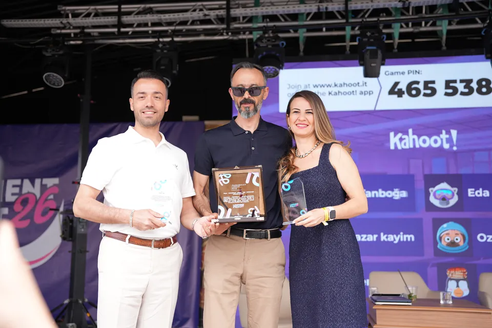
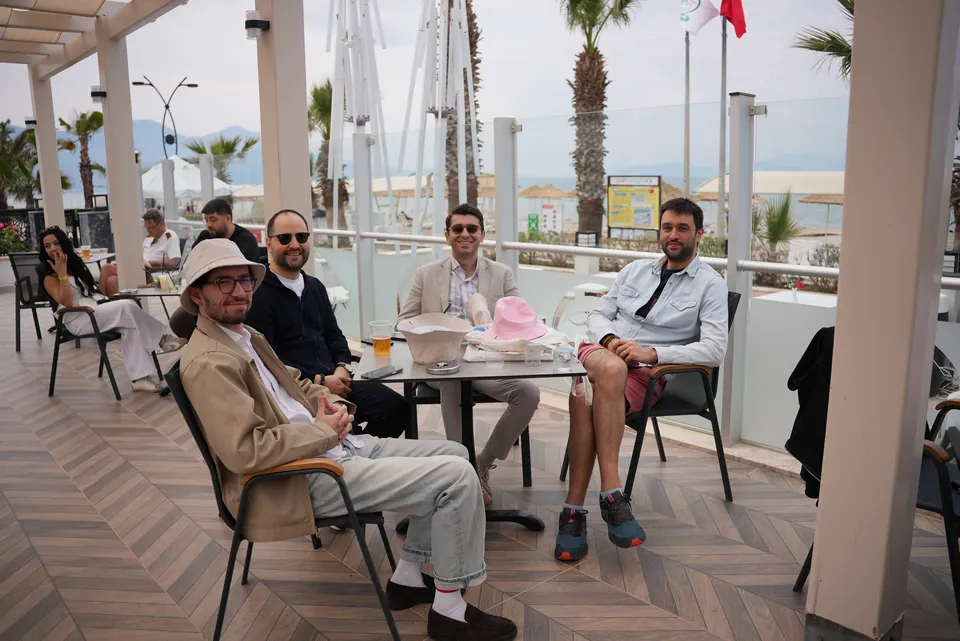
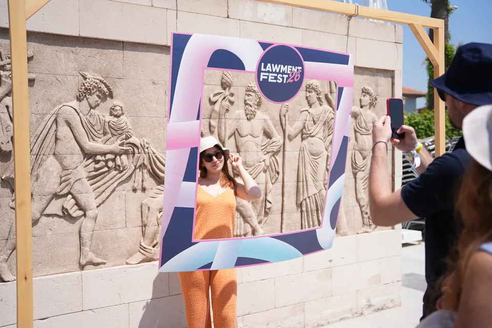
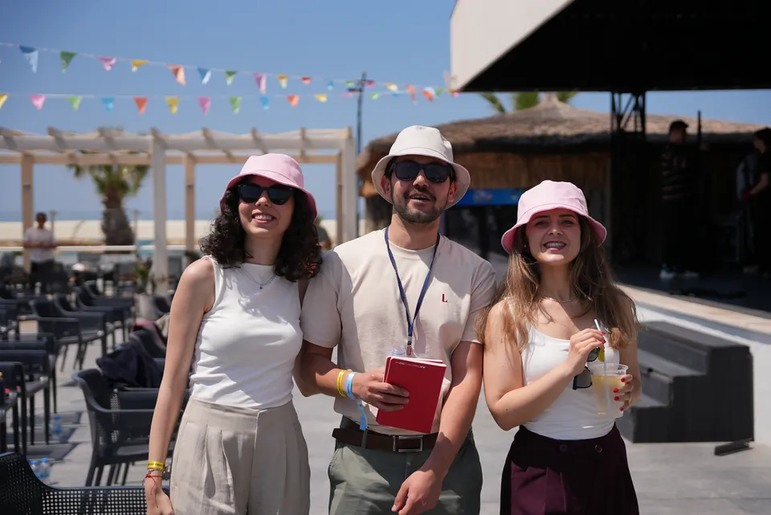
02 / Rekabet hukuku yarışması · ACTECON ana sponsorluğunda
Teoriden uygulamaya: Comparena
ACTECON ana sponsorluğunda gerçekleştirdiğimiz Comparena, hukuk öğrencilerini rekabet hukuku alanında uygulamalı bir yarışma deneyiminde buluşturuyor. Gerçek vakalardan uyarlanan senaryolar üzerinden ilerleyen yarışmada takımlar, aynı dosyayı hem Rekabet Kurumu raportörü hem de savunma tarafı perspektifinden ele alarak hukuki analiz ve strateji geliştirme fırsatı buluyor.
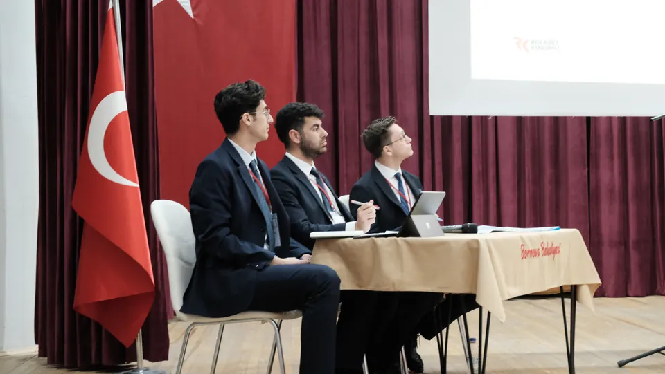
Yarışma süreci
Katılımcılara ayrıntılı bir olay metni sunuluyor ve takımlardan dosyaya ilişkin her iki taraf adına da dilekçe hazırlamaları bekleniyor. Yarışma öncesinde ACTECON Yönetici Ortağı Av. Bahadır Balkı tarafından rekabet hukuku eğitimi veriliyor. Hazırlanan dilekçeler, hukuk uygulamacılarından oluşan jüri tarafından değerlendiriliyor. Finale kalan takımlar ise Rekabet Kurumu'ndaki duruşma pratiğini esas alan bir formatta sözlü savunmalarını gerçekleştiriyor.
Comparena'da katılımcıları neler bekliyor?
- Gerçek vakalardan uyarlanan senaryolar üzerinden çalışma
- Takım hâlinde hukuki analiz ve strateji geliştirme
- Raportör ve savunma tarafı adına dilekçe hazırlama
- Uygulamacılardan oluşan jüri önünde değerlendirilme ve sözlü savunma deneyimi
2025: İzmir'de rekabet hukuku alanındaki tek yarışma olarak başladı. Dört takım finale kaldı; birincilik ve En İyi Dilekçe Ödülü Equilibrium Takımı'nın oldu. 2026: İkinci yarışmaya 17 takım başvurdu; 6 Şubat'ta sözlü savunmaya hazırlık eğitimi, 7 Mart'ta final yapıldı.
“Comparena özellikle hukuk eğitim sisteminde yer almayan argüman geliştirme, dilekçe hazırlama, takım çalışması yapma, sunum yeteneği gibi becerilere odaklanıyor.”
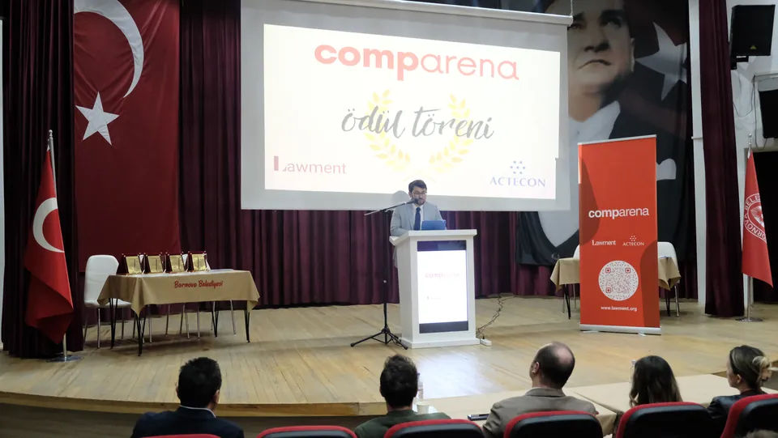
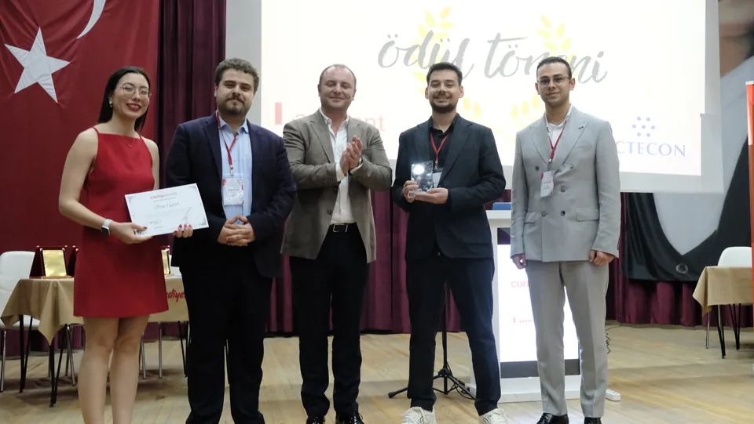
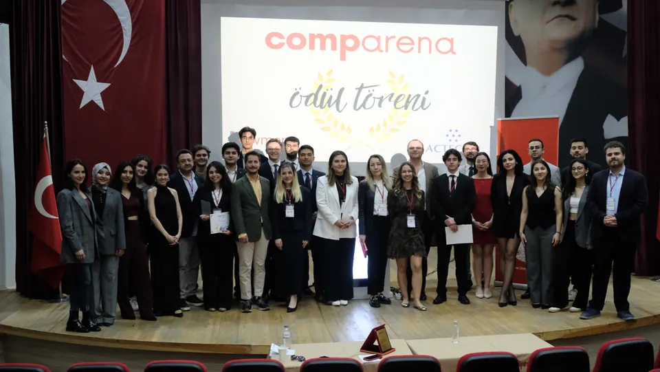
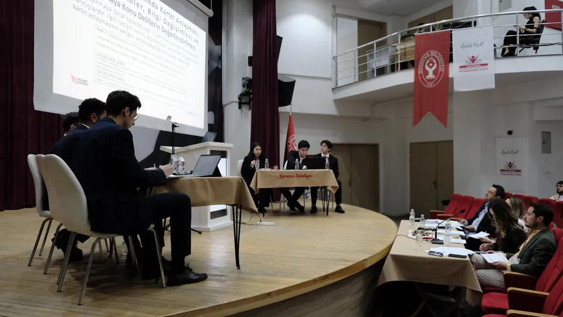
03 / Yeni yıl buluşması
Back in Lawment: Yeni yıla birlikte başlıyoruz
Back in Lawment, yeni yılın başlangıcında hukuk öğrencilerini, mezunlarımızı, avukatları ve hukuk dünyasından farklı isimleri bir araya getirdiğimiz buluşmamızdır. Lawment'in açılış etkinliği olarak düzenlediğimiz bu organizasyonda farklı deneyim ve kariyer aşamalarındaki hukukçuların tanışmasına, birikimlerini paylaşmasına ve yeni döneme birlikte başlamasına alan açıyoruz.
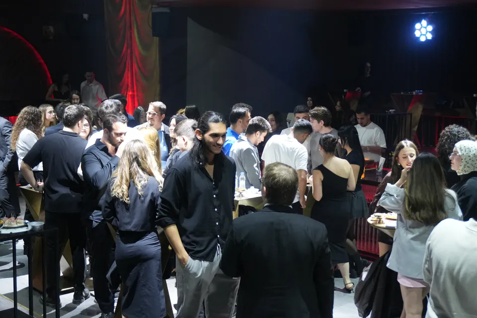
Buluşmada neler var?
- Hukuk öğrencileri, mezunlar ve avukatlarla tanışma
- Mesleki deneyimlerin ve kariyer yolculuklarının paylaşılması
- Farklı kuşaklardan hukukçular arasında iletişim ve etkileşim
- Yeni döneme birlikte başlama ve Lawment ailesiyle buluşma
Aralık 2025'teki buluşma, derneğin yeni üyeleriyle düzenlediği ilk etkinlikti. Derneğin 2. kuruluş yıl dönümü pasta kesimiyle kutlandı; katılımcılar masa karıştırma ve “Ben Kimim?” oyunuyla tanıştı.
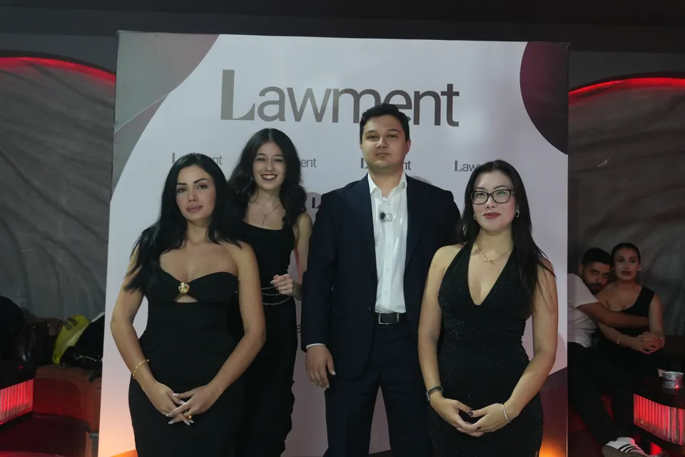
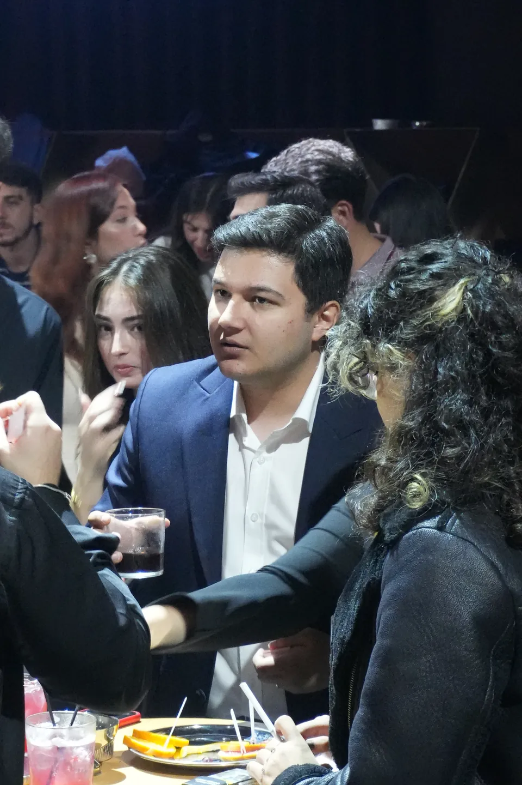
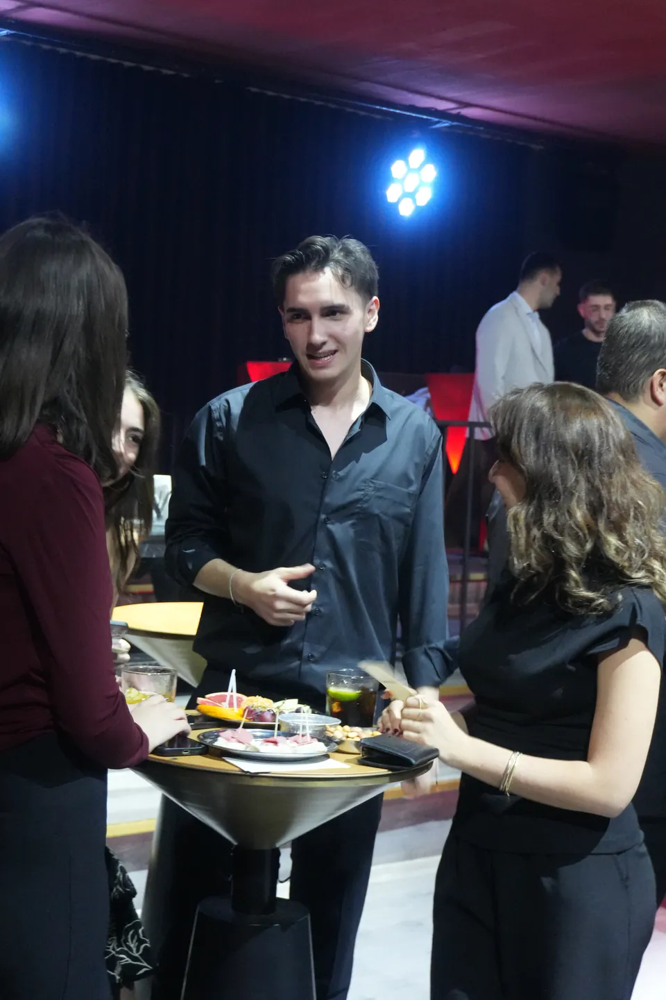
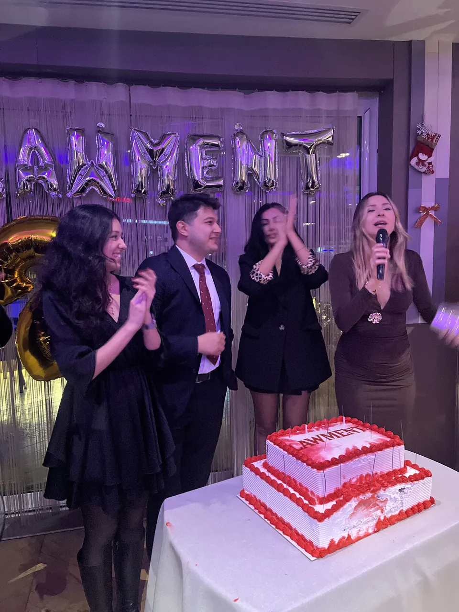
04 / Deneyim paylaşımı
Lawment Inspired
Farklı alanlarda deneyim sahibi isimleri genç hukukçularla buluşturan, bilgi ve deneyim paylaşımına dayalı bir buluşma formatı.
Lawment Inspired'ın şimdiye kadar tek bir buluşması yapıldı; bu buluşma NSN Law'dan Aslı Mergen ile gerçekleşti. Format, farklı konulara ve bakış açılarına yer vererek katılımcılara yeni perspektifler kazandırmayı amaçlıyor.
05 / Dergi
Lawment Insights
Lawment Insights, derneğimizin etkinliklerini, projelerini ve yıl boyunca gerçekleştirdiğimiz çalışmaları bir araya getirdiğimiz dijital dergimizdir. Lawment Fest'ten Comparena'ya, buluşmalarımızdan diğer organizasyonlarımıza uzanan faaliyetlerimizi içeriklere dönüştürerek etkinliklerimizin izini sayfalara taşıyoruz.
İlk sayıda Comparena'nın teoriyle uygulamayı bir araya getiren süreci, Lawment Fest'25'ten izlenimler ve Back in Lawment'ten katılımcı görüşleri yer aldı.
- Sayı
- 1 · Şubat 2026
- Bu sayıda
- Comparena, Lawment Fest'25, Back in Lawment
Lawment Insights · Sayı 1
Dergiyi çevir
Sayfayı kaydır ya da oklarla çevir.
Duyurular
Duyuruları takip et.
Başvurular ve duyurular önce Instagram hesabımızda yayımlanıyor.